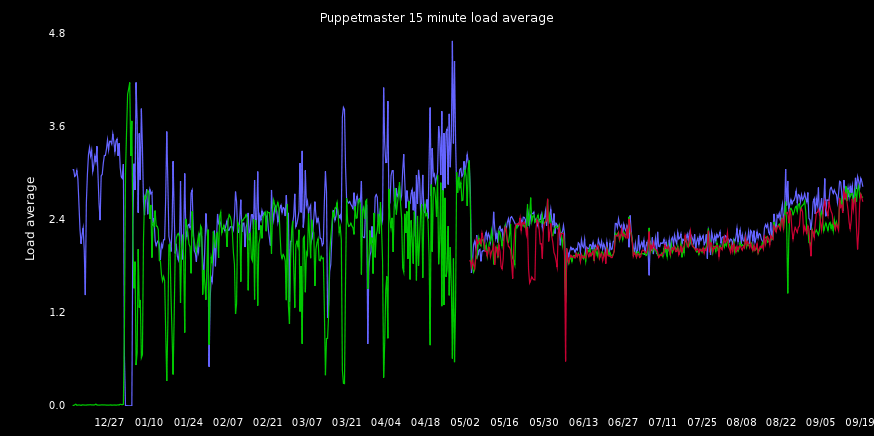

Puppet at Media Temple
What we will cover Incremental
- Multimaster puppetmaster setup at Media Temple
- Our puppet module development process
- Custom puppet functions we use
Multimaster puppet Incremental
Our HA puppetmaster configuration automagically configures:
- Apache
- Passenger
- Puppet
- LVS
- Glusterfs
Why we needed multiple puppetmasters Incremental
- About 1500 clients
- Lots of timeouts
- Long catalog compilation times
- Did I mention timeouts?
- Hard to watch puppet work when it takes 20 minutes to run a manifest
- Some semblance of HA is nice
Apache / Passenger / Puppet configuration Incremental
- No rocket science here
- Installs Apache and Passenger
- Configures Apache virtual host
- Configures Passenger/Rack
- Configures Puppetmaster
- This should be the 'Hello World' of puppet modules
Configuring HA Incremental
- We use LVS and Keepalived
- LVS runs on each puppetmaster
- The shared IP lives on only the 'primary' puppetmaster
- Stopping Apache removes a node from puppetmaster duties for maintenance
Keeping in sync Incremental
- Sure that's great, but now I have to install puppet modules on n puppetmasters?
- Nope, we deploy all our puppet code as Debian packages
- We have a shared filesystem, so we only have to do it once
- pm_maint script to:
- Drop a node out of the load balancer (stop apache)
- Jabber internally ("chunga put pm01 in maintenance mode")
- Syslog whodunit
- Remount the shared filesystem so we can update packages
- Also, we have a cron job that automatically adds a node back into LVS after 15 minutes for when people forget
Shared filesystem you say? Incremental
- A little bit more resilience, and less maintenance
- We only have to deploy code to one place
- We store /etc/puppet in the shared filesystem
- All our puppet code
- CA certs
- Client cert requests
- Client reports
Enter GlusterFS Incremental
- We're too innovative (cheap) for dedicated shared storage (eg: NetApp)
- So we picked GlusterFS
- But it can be kind of slow with our configuration
- Or puppet or our puppet plugins are doing it wrong
- 500k stat(2) calls per agent run
- We cheated a bit and use a read-only bind mount of /etc/puppet/manifests
- Bypasses all the coherency checking Gluster does to make it usable, since we are talking to a local 'copy' and not the shared volume
Bind mounts
/etc/fstab looks like this
/etc/glusterfs/puppet.vol /etc/puppet glusterfs defaults /var/gluster/manifests /etc/puppet/manifests bind ro,bind
What it looks like

Effect on load
- Here is the nice pretty picture of load average over time

- Unfortunately, we do not have a good history of the more interesting data like catalog compilation times
Deploying code Incremental
Set the stage:
aptitude update pm_maint begin
One can now write directly to /etc/puppet:
aptitude install puppet-module-keepalived pm_maint end
Since Gluster is always live and in a RAID-1 configuration, changes made in maintenance mode are almost immediately propagated to all puppet masters. So far, this has not been an issue.
Pros
- It works
- It is really easy to add more puppetmasters
- Way cheaper than NetApp
Cons
- Only one puppetmaster has an accurate list of installed puppet-module-<foo> packages. In practice, this is not an actual problem.
- It would be simpler if we didn't have to cheat GlusterFS with the bind mounts.
- It would be nice if we had proper shared storage. That could be simpler than GlusterFS.
Our puppet module dev/test process Incremental
- Packaging / continuous integration of puppet modules as packages
- Jenkins will build each puppet module to a .deb & .rpm
- Jenkins tests for syntax errors
- In *.pp (seemingly broken in puppet 2.6 - whichever version ships with Debian Squeeze)
- In all templates
- Could easily test libs/plugins
Developing puppet modules Incremental
- Spin up a VMs and run the 'dev' variant of the puppet module
- Our puppet modules are installed on the dev host
- No puppetmaster in dev
- Hack hack hack
- Merge changes back to the production branch
- Jenkins builds packages and automatically jams them in our package repositories
Testing before deploying Incremental
- The dev environment should match production.
- But in reality, it might not.
- It's always nice to test new features on a few hosts manually from the testing environment before deploying the new puppet module to the entire datacenter
Testing before deploying Incremental
- We used to just have one testing environment shared by all developers
- People forgot to clean up after themselves
- Sometimes two people would be working on same or related modules and confuse each other
Testing before deploying Incremental
- So we have a last chance test environment
puppetd --test --no-splay --noop \
--environment ${USER}\_testing
- Where does the ${USER}_testing environment come from ?
- First, the puppet module that builds puppet masters creates /etc/puppet/environments/${USER}_testing for each of our configured users.
- Second, yet another handy helper script called penv
- Penv is just a wrapper to install our puppet-module-<foo> packages in /etc/puppet/environments/${USER}_testing
- Of course, the per-user environments all live on the GlusterFS volume
What is this 'dev' puppet module?
- We like to spin up instances of our applications for development
- So we use puppet to build them
- But we run into some problems
Example: A database server
class db_server {
$db_username = 'db123'
$db_password = 'somethingreallyhardtotype'
db_user { $db_username:
ensure => present,
password => $db_password,
}
}
Example: A database client
class app {
$db_username = 'db123'
$db_password = 'somethingreallyhardtotype'
file { '/etc/app/access.yml':
content => template('db_client/access.erb')
}
}
Problems
There are a few problems with that example
- The username/password pair are repeated
- We are checking in passwords into source control
- It is difficult to configure dev environment differently
One solution
- Production secret values out of source control
- Support different values for development/production
- As much data as possible with puppet module
get_var & get_secret Incremental
- A pair of Puppet functions we wrote and open sourced.
- Allows us to write more generic puppet modules, and control results at run time
- Has facilities for running in dev environment, with development configs transparently configured
- Production secrets like passwords and SSL certificates do not show up in dev environments
- Avoid having to repeat information
get_var
- Look in the module named module for a key named key and set $variable
$variable = get_var('module', 'key')
Module structure
.
├── README
├── depends
├── files
├── manifests
│ └── init.pp
├── templates
├── var <- production values
│ └── main.yml
└── var_dev <- development values
└── main.yml
File contents
Just YAML
--- key: value
get_var again
$variable = get_var('module', 'key')
- In production, look in module/var/main.yml
- In dev, look in module/var_dev/main.yml
Back to our database user
class db_server {
$db_username = get_var('db_server','db_username')
$db_password = 'somethingreallyhardtotype'
db_user { $db_username:
ensure => present,
password => $db_password,
}
}
Client configuration
class app {
$db_username = get_var('db_server','db_username')
$db_password = 'somethingreallyhardtotype'
file { '/etc/app/access.yml':
content => template('db_client/access.erb')
}
}
We'll get to that pesky password later
Other examples
- Configuring your webserver to run only a single worker in dev environment
- Configuring log levels in development to log to the screen
- Maybe the website that sends customer emails sends them all to a local mailbox
get_secret
Looks like get_var
$password = get_secret('module','key')
Module structure
.
├── README
├── depends
├── files
├── manifests
│ └── init.pp
├── templates
└── secret_dev <- development values
└── main.yml
Production secrets
- Do not live in the module
- They live in /etc/puppet/secret on the puppetmasters
- The secrets on the puppetmasters are synced from a separate server
- Local changes to secrets on puppetmasters will be destroyed by this sync
Back to our database user
class db_server {
$db_username = get_var('db_server','db_username')
$db_password = get_secret('db_server','db_password)
db_user { $db_username:
ensure => present,
password => $db_password,
}
}
Client configuration
class app {
$db_username = get_var('db_server','db_username')
$db_password = get_secret('db_server','db_password)
file { '/etc/app/access.yml':
content => template('db_client/access.erb')
}
}
Secrets - Development vs production
Development:
db_server/secret_dev/main.yml
--- db_password: letmein
Production:
/etc/puppet/secret/db_server/main.yml
--- db_password: somethingreallyhardtotype
get_var/get_secret Pros
- Data is mostly kept with the puppet module
- Clear divide between development & production
get_var/get_secret Cons
- Not included with puppet
- Need to duplicate var/var_dev values even if they are not different in development environment.
extlookup pros
- Included with puppet
extlookup cons
- Data is managed separately from the puppet modules